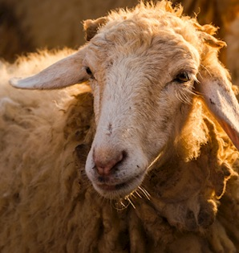
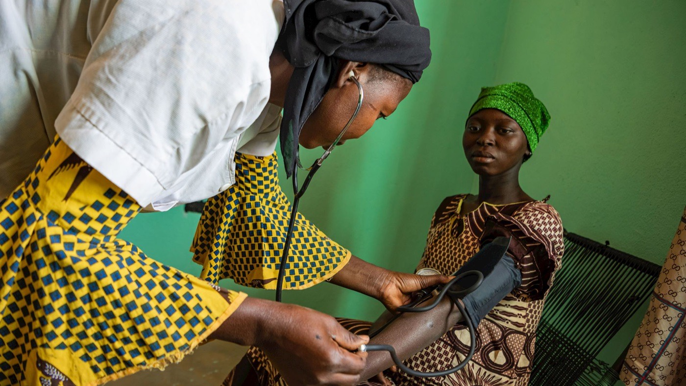
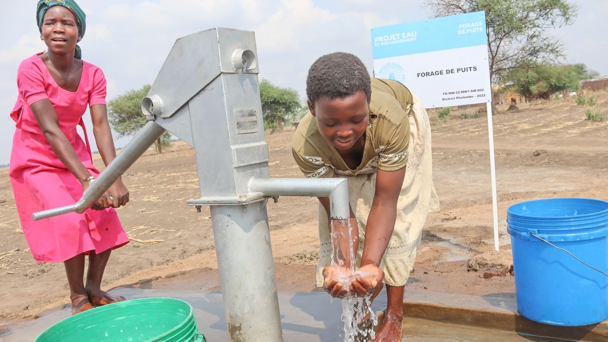
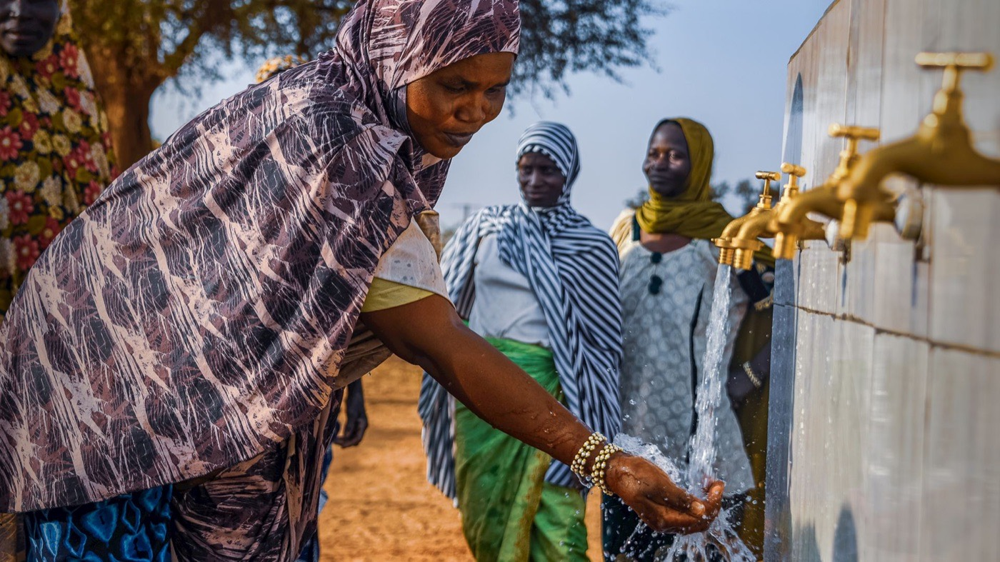
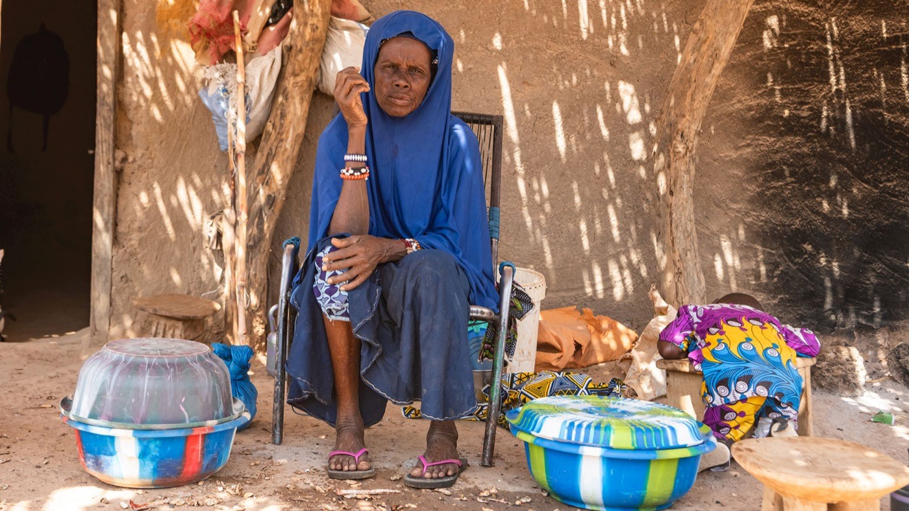
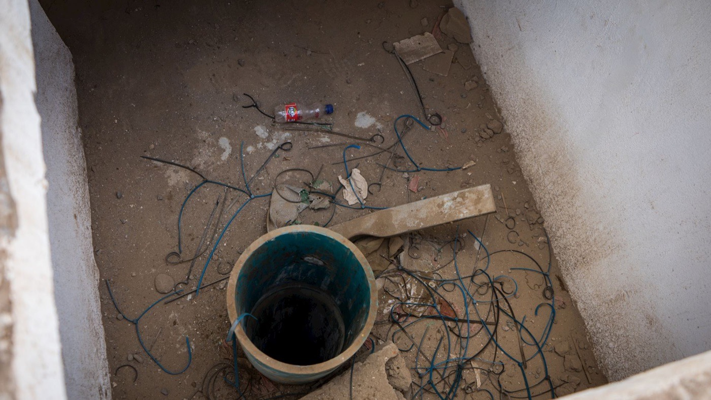
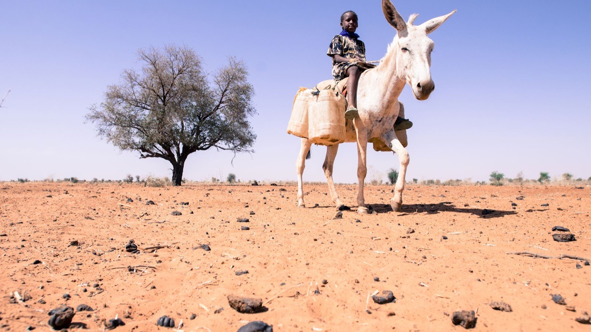

- Six projets, de l'arbre à 15 € au puits dès 350 €
- Plaque ou certificat au nom de votre choix
- Reçu fiscal immédiat : 100 € donnés vous coûtent 34 €
2 600puits et forages depuis 2007
18 000arbres fruitiers plantés au Sahel
1 200familles autonomes grâce à un métier
20 ansde durée de vie d'un puits entretenu
Nos projets de sadaqa jariya
Quels projets de sadaqa jariya choisir ?
Du plus petit geste au plus grand ouvrage. Chaque projet est suivi par nos équipes locales et vous recevez des nouvelles de sa mise en place.






L'eau coule encore.
Un puits sert 300 à 500 personnes pendant vingt ans. Dès 350 €, à votre nom ou au nom d'un proche disparu.
Construire un puits
Pour un défunt
Une sadaqa jariya au nom d'un proche disparu
Le hadith est clair : l'aumône continue est l'une des trois œuvres dont le défunt continue de bénéficier. C'est pourquoi tant de familles choisissent un puits, un arbre ou un élevage au nom d'un père, d'une mère, d'un enfant.
Vous indiquez le nom lors du don. Pour un puits, une plaque est posée sur l'ouvrage et vous recevez les photos de l'inauguration et ses coordonnées GPS. Pour les autres projets, un certificat au nom du défunt vous est envoyé. Beaucoup de donateurs programment aussi un petit don chaque vendredi, jour de la visite au cimetière et de l'invocation.
« Un puits à Ségou porte le nom de mon père. Chaque fois que je pense à lui, je sais que l'eau coule encore. »Nadia, donatrice, Lyon

Sadaqa jariya
Qu'est-ce que la sadaqa jariya ?
Le mot sadaqa désigne toute aumône volontaire ; jariya signifie « qui coule, qui continue ». La sadaqa jariya, que l'on écrit aussi sadaqah jariyah ou sadaka jariya, est donc l'aumône dont le bienfait se renouvelle sans que vous ayez à redonner. Le Prophète en a donné la liste la plus célèbre : enseigner une science, faire couler une rivière, creuser un puits, planter un palmier, bâtir une mosquée, transmettre un livre, laisser un enfant qui invoque pour vous. Chaque fois que quelqu'un boit à votre puits ou mange de votre arbre, la récompense vous est écrite, de votre vivant comme après votre mort.

Donner, concrètement
Fonds sadaqa jariya
10 € vous coûtent 3,40 € après réduction d'impôt de 66 %.
Je donne chaque moisInvesti dans les puits, les arbres et les projets d'autonomie en cours · reçu fiscal immédiat
Sadaqa jariya
Sadaqa, sadaqa jariya, zakat : quelle différence ?
| Sadaqa | Sadaqa jariya | Zakat al maal | |
|---|---|---|---|
| Caractère | Volontaire | Volontaire | Obligatoire, 2,5 % |
| Bienfait | Immédiat | Tant que l'ouvrage sert | Immédiat |
| Bénéficiaires | Libres | Libres, souvent une communauté | Huit catégories d'ayants droit |
| Exemple | Un repas | Un puits, un arbre, un métier | Colis, parrainage d'orphelin |
La zakat al maal doit être remise aux ayants droit, en principe sous une forme dont ils disposent librement : un élevage ou un fonds de commerce remis à une famille pauvre peut être financé par la zakat, un puits collectif relève plutôt de la sadaqa. Si vous souhaitez affecter votre zakat à un projet d'autonomie, cochez « Zakat » lors du don et nous choisissons un projet éligible. Le calculateur vous donne le montant dû.
Sadaqa jariya
Le don du vendredi
Le vendredi est le meilleur jour de la semaine pour l'aumône. Programmez un petit don chaque vendredi, à partir de 5 €, affecté au fonds sadaqa jariya : nous l'investissons dans les puits, les arbres et les projets d'autonomie en cours. Sur un an, 5 € par vendredi financent un arbre fruitier et deux tiers d'un élevage de poules. Programmer mon don du vendredi.

Sadaqa jariya
Intérêts bancaires
Les intérêts que vous ne souhaitez pas conserver peuvent être versés au fonds intérêts bancaires. Ils ne sont pas considérés comme une sadaqa pour celui qui les verse et financent uniquement des infrastructures : latrines, routes d'accès, réseaux d'eau, jamais la nourriture, les salaires ni les projets religieux. Verser des intérêts bancaires.

Sadaqa jariya
Aller plus loin : le waqf
Le waqf est une sadaqa jariya institutionnelle : un capital immobilisé dont seuls les revenus sont dépensés, pour toujours. Il finance l'entretien des puits, des bourses scolaires et les médicaments des cliniques. La part est de 100 €.
Sadaqa jariya
Sadaqa jariya et réduction d'impôt
Muslim Hands France est une association d'intérêt général : votre sadaqa jariya ouvre droit à une réduction d'impôt sur le revenu de 66 %. 100 € donnés vous coûtent 34 €, un arbre de 15 € revient à 5,10 €, un puits de 350 € à 119 €. Le reçu fiscal est envoyé par e-mail immédiatement après le don, et un récapitulatif annuel vous est adressé. Tout savoir sur la déduction fiscale.

Sadaqa jariya
Questions fréquentes sur la sadaqa jariya
Quelle est la différence entre sadaqa et sadaqa jariya ?
La sadaqa est toute aumône volontaire, d'un repas à un sourire. La sadaqa jariya est celle dont le bienfait continue après le don : un puits qui coule, un arbre qui donne des fruits, une école, un métier transmis. Sa récompense dure tant que l'ouvrage profite à quelqu'un.
Peut-on faire une sadaqa jariya pour un défunt ?
Oui. Selon le hadith rapporté par Abou Hourayra, l'aumône continue est l'une des trois œuvres dont le défunt continue de bénéficier. Le puits à son nom est la forme la plus choisie ; un arbre, un élevage ou une part de waqf conviennent aussi.
Quel est le plus petit projet de sadaqa jariya ?
Un arbre fruitier à 15 €, soit 5,10 € après réduction d'impôt. Vous pouvez aussi verser chaque mois ou chaque vendredi au fonds sadaqa jariya, à partir de 5 €.
Peut-on verser sa zakat en sadaqa jariya ?
La zakat al maal doit être remise aux huit catégories d'ayants droit, en principe sous une forme dont ils disposent librement. Un élevage ou un commerce remis à une famille pauvre peut être financé par la zakat ; un puits collectif relève plutôt de la sadaqa. Cochez « Zakat » lors du don et nous affectons le montant à un projet éligible.
Que deviennent les intérêts bancaires versés ?
Ils ne sont pas considérés comme une sadaqa pour le donateur et financent uniquement des infrastructures (latrines, routes, réseaux d'eau), jamais la nourriture, les salaires ni les projets religieux.
La sadaqa jariya est-elle déductible des impôts ?
Oui. Muslim Hands France est d'intérêt général : 66 % du don est déductible de l'impôt sur le revenu. 100 € donnés vous coûtent 34 €, un puits de 350 € revient à 119 €. Le reçu fiscal est envoyé par e-mail immédiatement.